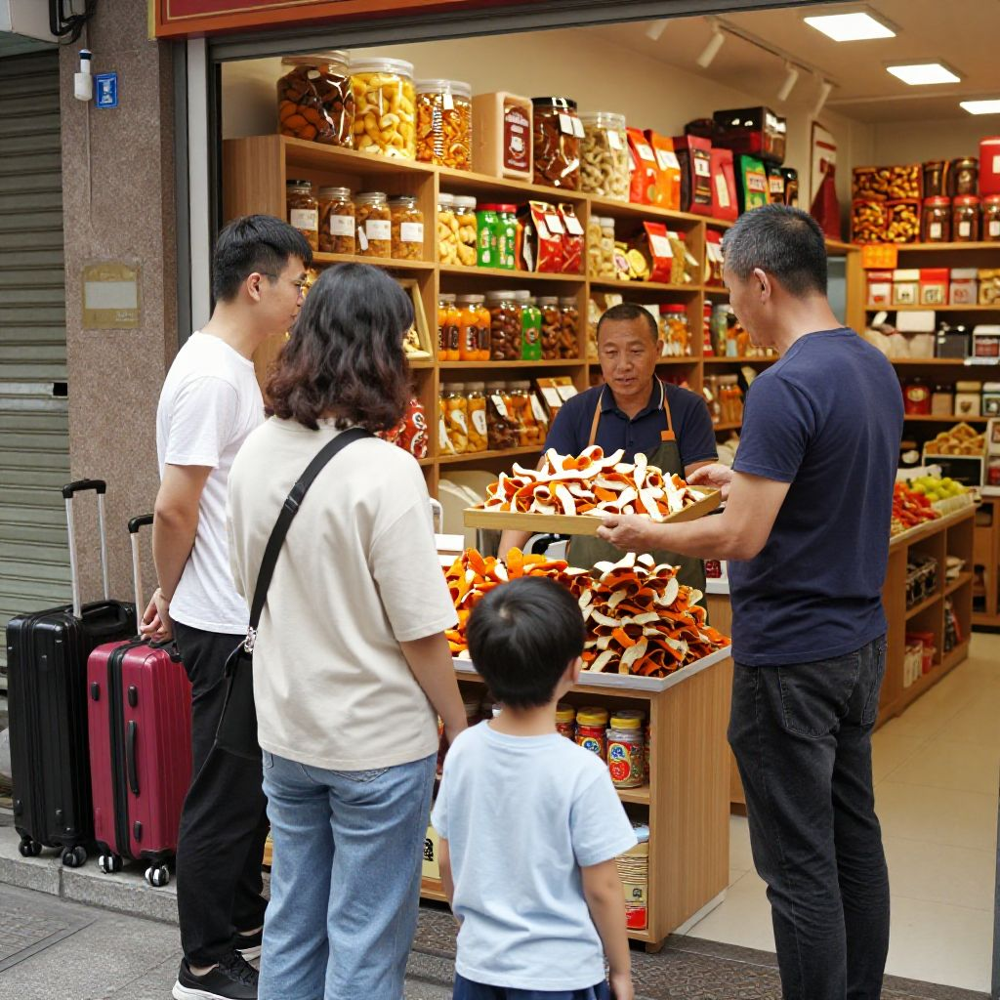
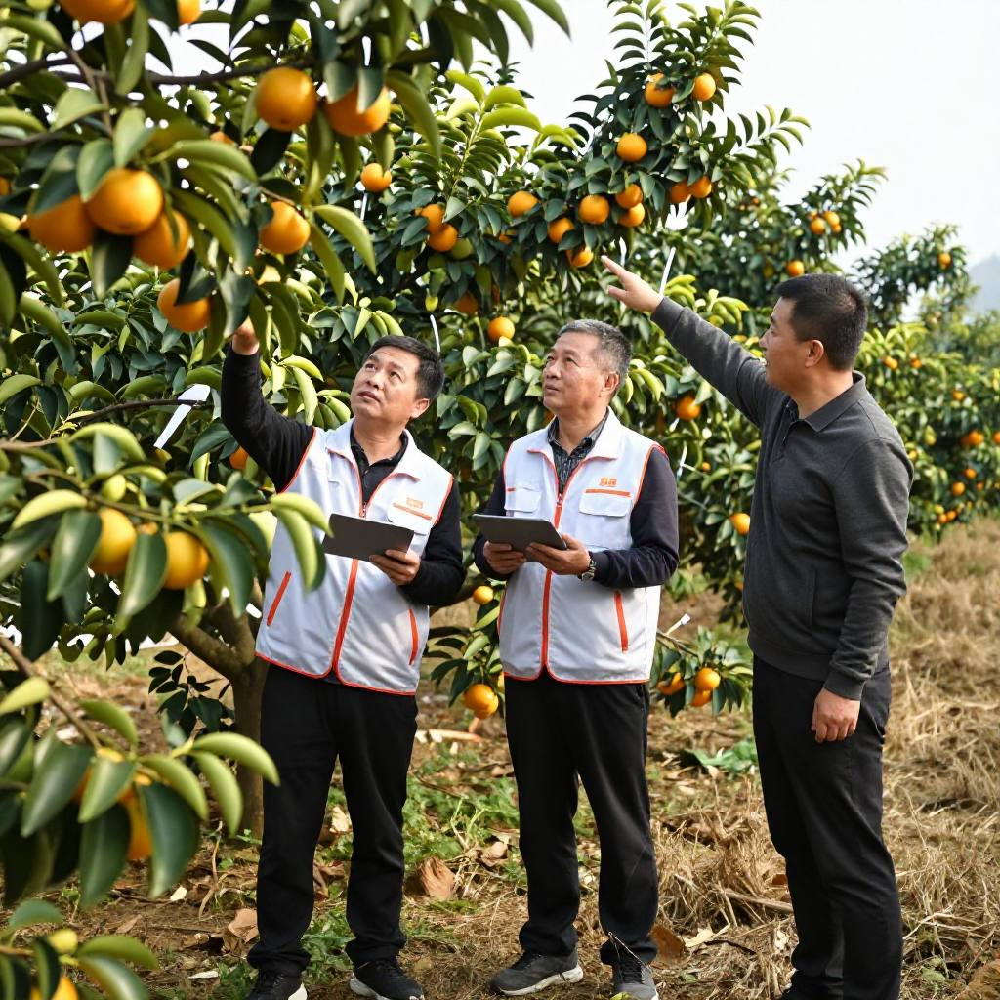

國慶假期首日，新會陳皮產業傳來一串消息：政策端與市場端同向發力，數字化進程明顯提速。在距新會柑集中採收不足兩個月的節點上，政企聯動、溯源升級、跨境通路打通等利好集中釋放。以下為今日值得關注的核心資訊。
一、國慶首日文旅消費升溫，小城迎「反向奔赴」

據證券時報報道，飛豬數據顯示，10月1日國內門票預訂量同比增長近30%；購買自然風光、村寨類景區產品的用戶數增長近50%；境外接送、境外當地玩樂訂單量同比分別增長43%和37%。美團同日發布的國慶假期首日出行數據也顯示，小城迎來「反向奔赴」。
這股客流同樣吹到了新會。陳皮村南門牌坊一帶，今早開始就有拖着行李箱的遊客進出。
「姐，今朝已經有三批客人問可唔可以入倉睇皮，仲有一家三口話要帶細路睇開柑。」
「唔好只帶佢睇熱鬧。開柑、翻皮、掃溯原始碼，一步步畀佢睇清楚，佢先知道一片皮點解值得等三年。」
影響分析：假期客流是產區最直接的品牌曝光。對門店而言，能把「看熱鬧」轉成「看得懂」，比單純多賣幾罐更有價值。
二、十月起新會柑鮮果產量落田現場核定

新會區農業農村局組織開展2026年新會柑鮮果產量申報核定工作專題培訓，圍繞鮮果產量測算標準、實地核定流程及手機端線上登記申報操作進行系統講解。按安排，種植戶須分別在7、8、9月每月20日前完成產量申報，數據一經提交不可更改。
月度申報結束後，區農業農村局將於10月啟動田間現場核定環節，組織區、鎮、村三級幹部深入實地核查，確保申報數據與實際產量相符。
「新會柑產量核定係數字化溯源體系嘅關鍵一環。逐年核定固化鮮果產量，就可以精準鎖定可加工陳皮嘅總量，由源頭堵住虛標產量同銷量。」
影響分析：產量數據「逐年固化＋實地核定」，等於給產區裝了一道總量閘門。對消費者而言，這意味着掃碼看到的產量與年份信息更可信。
三、陳皮跨境貿易新鏈路打通：首單落地廣商所
據南方農村報報道，隨着廣州商品交易所首筆陳皮跨境交易落地，一條集「數字交易＋金融賦能＋溯源倉儲」於一體的跨境貿易全鏈路正式打通。新會企業邑祥陳皮作為核心供貨方，依托指定監管倉完成全流程溯源管理與倉儲服務，實現電子倉單註冊流轉與跨境貨權交割。
在結算端，廣商所攜手中國建設銀行建立跨境結算方案，供貨企業憑真實交易數據、完整溯源信息和倉儲背書通過跨境外匯審核，做到「賣得出去、收得回錢」。目前新會陳皮全產業鏈總產值已達283億元。
「以前寄一罐皮出國，靠嘅係快遞同人情。而家係倉單、係監管倉、係銀行結算——一片皮由農產品變成可以流通、可以確權嘅標準商品。」
影響分析：跨境全鏈路打通，讓新會陳皮具備國際流通屬性，有望提升道地陳皮的國際溢價能力；對產區企業而言，合規結算通道同樣是硬門檻。
四、500億產值路線圖與9.06億元簽約
9月中旬，第七屆新會陳皮文化節啟幕，本屆以「新會陳皮 人類共享」為主題，採取「行業主辦、企業參與、市場運作」的新機制。開幕式上正式提出「新會陳皮2030年全產業鏈產值500億元」的奮進目標。
系列簽約成果同樣亮眼：新會區人民政府與中國食品工業協會簽署戰略合作備忘錄，新會本地優質企業與全國渠道商代表簽約總金額達9.06億元。文化節同期舉辦新會陳皮三產融合展，集中呈現從種植、加工到文創、旅遊的全鏈條成果。
影響分析：「500億」目標意味着新會陳皮從百億產業邁向五百億集群。超9億元簽約釋放渠道商對道地陳皮的信心，對上游原料價格形成支撐，建議密切關注採收季原料價格走勢。
五、價格走勢：穩中有升，分化加劇
綜合多方行業數據，2026年新會陳皮價格整體呈現「穩中有升、分化加劇」態勢。核心產區受氣候與管理因素影響，柑果產量預估同比下降；低年份（3年、5年）陳皮受種植成本推動，預計上漲5%至10%；高年份（10年及以上）因倉儲與陳化成本持續上升，漲幅可達10%至20%。
消費端同樣兩極分化：高年份收藏級陳皮被投資者與高端消費者追捧，價格堅挺、流通量少；3至5年口糧級陳皮則成為大眾日常養生主力，品牌競爭激烈。隨着藥食同源需求增長，新會陳皮年消費需求增速已達15%以上。
影響分析：穩中有升是主基調，但消費者要警惕「低價高年份」的營銷陷阱。選購時建議認準溯源碼、古法工藝、批次檢測報告三要素。
六、地理標誌打假持續高壓
新會陳皮、新會柑地理標誌保護專項行動監管執法組近日在新會區舉辦2026年新會陳皮保護專項銷毀活動，同步開展「代表委員看陳皮」活動，持續保持打假高壓態勢。新會區市場監管局持續推廣地理標誌專用標誌和證明商標的規範使用，引導企業申報「灣區認證」；新會陳皮行業協會明確表態，將「以零容忍態度打擊造假售假行為」。
影響分析：打假常態化有利於肅清市場亂象。對消費者而言，選購時務必認準國家地理標誌保護產品認證，選擇有源頭溯源能力的品牌，避開低價誘餌。
常見問題
國慶假期來新會陳皮村，能看到什麼？可以看到新皮入庫、標準化監管倉和溯源展示中心。新會陳皮村南門牌坊G04滢滢姐的店裡常年備着熱茶，可當面看皮、免費試喝。
產量核定對買陳皮的人有什麼用？核定把每年可加工的陳皮總量鎖死，虛標產量、銷量的空間被壓縮；配合溯原始碼，消費者能看到更可信的產地與年份信息。
跨境交易落地後，陳皮會漲價嗎？短期看是打開了國際通路、提升道地皮的溢價能力；但價格最終仍取決於產量與品質。認準溯源與檢測報告，比追逐行情更實際。
3年陳和10年陳，今年該買哪個？日常飲用選3至5年，價格實在、香氣足；送禮或收藏選10年以上，陳香更沉、湯更滑。今年兩檔價差預計進一步拉開。
怎樣避開「低價高年份」的陷阱？記住三個要素：溯原始碼可查、古法自然生曬、批次檢測報告齊全。標價明顯低於行情的「老皮」，基本可以直接排除。
散戶自己存的皮，以後還有人認嗎？關鍵在存放條件。棉布袋或紫砂罐、乾燥通風陰涼處，新皮頭三年每年翻曬兩次，五年以上適時檢查。保存得當，年份到了自然有價值。
結語
今日新會陳皮產業好消息集中釋放：政策目標明確、產銷對接活躍、數字化確真落地、跨境通路打通。種種跡象表明，新會陳皮正從「經驗說話」走向「數據證真」的新階段。對消費者與收藏者而言，選對道地產區、認準溯源體系、堅守古法工藝，依然是穿越亂象、鎖定價值的核心法則。
采收季臨近，建議密切關注上游原料價格動態，同時留意各大品牌預售季優惠，合理安排品飲與收藏需求。想當面看皮、掃碼驗真，來新會陳皮村南門牌坊G04找滢滢姐坐坐。想看跨境通路這條新聞的完整脈絡，翻翻這篇《新會陳皮出海記》；想複習辨別真假的四招，看這篇《四招教你辨別新會陳皮真假》。
下期預告：滢滢姐會把採收季前的原料價格、各年份成品行情整理成一張對照表，並走訪兩家果圍問問今年的掛果情況——今年到底該不該囤，看數據再決定。